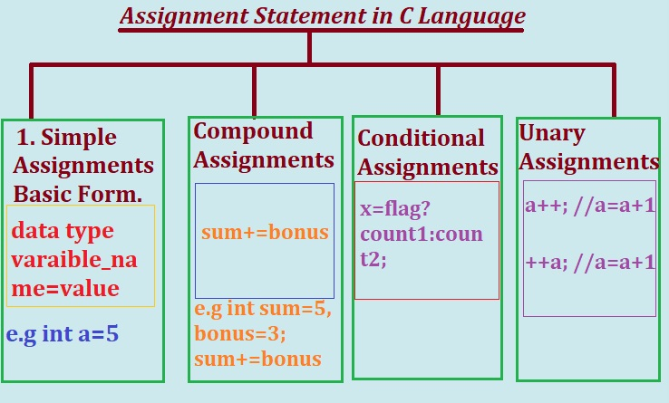

Assignment Statement in C language is a statement that assigns or set a value to a variable during program execution.
Assignement statements in programming allows the programmer to change or set the value stored in variable using Assignment(=) Operator.
The process of assigning the value to a variable using the assignment(=) operator is known as an assignment statement in C.
Assignment(=) Operator Assigns The value or value in a variable on right hand side to the variable on the left hand side.
The data type of the variable on right hand side should match to the data type of variable or constant or expression on right hand side.
C Language has different (types) ways to assigns values to variable, we will learn from the diagram given below.
Assignment Statement (=) in C Language
Syntax :1.Basic Assignment statement
Data Type Variable_name = variable/ constant /expression;
The Variable_name is assigned the values in variable or constants or expression.
The data type of the variable/ constant/expression on right hand side should match to the left hand side variable Variable_name with a few exceptions where automatic type conversions are possible.
Naming Rules or conventions for Assignment Statement
Programmer need to follow some Rules while writing the Assignment Statements in C program:
1. Variable names should not begin or start with number. Variable name can a letter, underscore, non-number any character like alphabet,underscore.
2. A new value assigned to an existing variable will overwrite the previous value and assign the new value to the variable.
3. The Data type defined and the variable value must match.
4.All the statements declaration must end with a semi-colon. (;)
5. The name of variable must be meaningful and clearly describe the purpose of variable name.
6.Duplicate name of variable is not allowed i.e the name once defined can only be used once in the program. programmer cannot redefine it to store other types of value.

Given Diagram shows the differnt ways of assigning values to variables.
1.Simple Assignment or Basic Form:
Simple Assignment or Basic form is one of the common forms of Assignment Statements in C program. Simple Assignment allow the programmer to declare,define and initialize and assign a value in the same statement to a variable. This form is generally used when the programmer want to use the Variable a few times.
This is the most commonly used form of assignment in programming.
Example 1: C program to illustrates the use of Simple Assignment statement .
/* e.g. C program to illustrate the use of simple Assignment statement or basic of
assignment statements */
#include<stdio.h>
int main()
{
int a,b,c;
float avg;
a = 9 ;
c = 10 ;
b = c ;
printf("\n a=%d",a);
printf("\n b=%d",b);
printf("\n c=%d",c);
b = c+3;
printf("\n Value of b after b=c+3-->%d",b);
avg = (b+c) / 2.0;
printf("\n Value of avg=%.2f",avg);
a = b && c;
printf("\n a=b&&c--->%d",a);
a = (b+c) && (b <c);
printf("\n a=(b+c) && (b <c)--->%d",a);
return(0);
}
Output:
a=9
b=10
c=10
Value of b after b=c+3-->13
Value of avg=11.50
a=b&&c--->1
a=(b+c) && (b <c)--->0
Program Explanation:
1. In the above program a,b,c is declared as integer variable to store the numbers where as avg is declared as float.
int a,b,c;
float avg;
2.
a = 9 ;
c = 10 ;
b = c ;
variable a is assigned value 9.
variable c is assigned value 10.
and b is assigned the value of c. Here value of b is 10 .i.e. b=10
3.
printf("\n a=%d",a);
printf("\n b=%d",b);
printf("\n c=%d",c);
The above statements displays the integer values of variable a,b,c
a=9
b=10
c=10
4.
b = c+3;
printf("\n Value of b after b=c+3-->%d",b);
here 3 is added in c(value of vaiable c is 10) it becomes 13 and value 13 is assigned to left hand side variable b , here b is 13 i.e. b=13.
the printf() displays output " Value of b after b=c+3--->13".
5. avg = (b+c) / 2.0;
printf("\n Value of avg=%.2f",avg);
After execution of a=(b+c)/2.0 the value of a is 11.50
so the output shown by printf() is "Value of avg=11.50".
6.
a = b && c;
printf("\n a=b&&c--->%d",a);
Logical anding operation is performed on the values in the variables a and b.
The value of c=10 and the value of b=13.
After succesful execution of this statement value of variable a is 1 or 'true'.
Any value in a variable except 'zero' (0 i.e false) is considered 'true' or 1.
The variable a is assigned to the integer value 1 which is true.
so a=1 && 1 is a=1
or
a=true && true is a=true or a=1.
printf("\n a=b&&c--->%d",a); displays output a=b&&c---->1
7. a = (b+c) && (b <c);
printf("\n a=(b+c) && (b <c)--->%d",a);
here expression (b+c) is true(1) and (b <c) is false(0).
so the entire expression evaluates to false(0) and the value is assigned to the variable a i.e a=0.
the printf() display the message " a=(b+c) && (b <c)--->0 "
2.Compound Assignment:
As we learn in above section the simple assignment statement is used to assign values in right hand side variable to left hand side variable using = operator.
A compound assignment operator has a shorter syntax to assign the result.
A compound assignment operator or statements are used to do mathematical operation in shortcut.
Two operands needs to perform the compound assignment operations.
The operation is performed on the two operands before the result is assigned to the first operand.
compound assignment operator are binary operators that modify the variable to their left hand side using the value or variable to their right.
Syntax:
expression1+= expression2;
These type of expression can also be written in expanded form, that is expression1=expression1+expression2;
+= Operator is called compound assignment operator.
C Language provides the following list of compound Assignment Operators.
1. +=
plus equal to += is Addition and Assignment operators. It add the value of the variable1 and variable2 and assigns the result to variable1.
e.g.
X+=Y
In the above expression the addition of values in X and Y is performd and assigns result to X.
The expression X+=Y is same as X=X+Y
2. -=
minus equal to -= is Subtraction and Assignment operators. It Subtract the value of the variable2 from variable1 and assigns the result to variable1.
e.g.
X-=Y
In the above expression the subtraction is performd,the value of X is subtracted from the value in X and assigns result to X.
The expression X-=Y is same as X=X-Y
3. *=
Multiplication equal to *= is Multiplication and Assignment operators. It Multiply the value of the variable1 and variable2 and assigns the result to variable1.
e.g.
X*=Y
In the above expression the Multiplication is performd,the value of X is Multiplyed to the value in Y and assigns result to X.
The expression X*=Y is same as X=X*Y
4. /=
Division equal to *= is Division and Assignment operators. It Divides the value of the variable1 byvariable2 and assigns the result to variable1.
e.g.
X/=Y
In the above expression the Division is performd,the value of X is Divided by the value in Y and assigns result to X.
The expression X/=Y is same as X=X/Y
5. %=
Modulus equal to %= is Modulus and Assignment operators. It Divides the value of the variable1 byvariable2 and assigns the remainder to variable1.
e.g.
X%=Y
In the above expression the Division is performd,the value of X is Divided by the value in Y and assigns remainder to X.
The expression X%=Y is same as X=X%Y
6. &=
Bitwise and equal to &= is Bitwise AND and Assignment operators. It performs the bitwise AND with variable1 and variable2 and assigns the result to variable1.
e.g.
X&=Y
In the above expression the bitwise anding operation is performd, after executing the X&=Y expression the result is assigned to X.
The expression X&=Y is same as X=X&Y
7. |=
Bitwise OR equal to != is Bitwise OR Assignment operators. It performs the bitwise OR with variable1 and variable2 and assigns the result to variable1.
e.g.
X|=Y
In the above expression the bitwise OR operation is performd, after executing the X|=Y expression the result is assigned to X.
The expression X|=Y is same as X=X|Y
8. ^=
Bitwise XOR equal to ^= is Bitwise XOR Assignment operators. It performs the bitwise XOR with variable1 and variable2 and assigns the result to variable1.
e.g.
X^=Y
In the above expression the bitwise XOR operation is performd, after executing the X^=Y expression the result is assigned to X.
The expression X^=Y is same as X=X^Y.
9. <<=
Bitwise left shift and equal to <<= is Bitwise Left Shift and Assignment operators. It performs the bitwise Left shift with variable1 and assigns the result to variable1.
e.g.
X<<=Y
In the above expression the bitwise left shift operation is performd, after executing the X<<=Y expression the result is assigned to X.
The expression X<<=Y is same as X=X<<Y
10. >>=
Bitwise right shift and equal to >>= is Bitwise Right Shift and Assignment operators. It performs the bitwise Right shift with variable1 and assigns the result to variable1.
e.g.
X>>=Y
In the above expression the bitwise right shift operation is performd, after executing the X>>=Y expression the result is assigned to X.
The expression X>>=Y is same as X=X>>Y
Lets Learn and practice The Assigment operator in detail using the following C program.
2. Assignment Operator complete C Program.
#include <stdio.h>
int main()
{
/* Simple Assignment*/
int x,i;
int y,j;
float c=30.0;
float d=5.0;
/*Nested or Multiple Assignment */
x = i = 5;
y = j = 3;
/*Compound Assignment*/
x += y;
printf("After Add and Assign :%d \n",x);
i -= j;
printf("After Subtract and Assign :%d \n",i);
x *= y;
printf("After Multiple and Assign :%d \n",x);
c /= d;
printf("After Divide and Assign :%f \n",c);
j %= i;
printf("After Modulo and Assign :%d \n",j);
j &= i;
printf("After Bitwise And and Assign :%d \n",j);
j |= i;
printf("After Bitwise OR and Assign :%d \n",j);
x ^= y;
printf("After Bitwise XOR and Assign :%d \n",a);
x <<= 2;
printf ("After Bitwise Left Shift and Assign :%d \n",a);
x >>= 3;
printf ("After Bitwise Right Shift and Assign :%d \n",a);
return(0);
}
Output:
After Add and Assign :8
After Subtract and Assign :2
After Multiple and Assign :24
After Divide and Assign :6.000000
After Modulo and Assign :1
After Bitwise And and Assign :0
After Bitwise OR and Assign :2
After Bitwise XOR and Assign :27
After Bitwise Left Shift and Assign :108
After Bitwise Right Shift and Assign :13
3.Conditional Assignment .
Conditional Assignments in C programming language is performed with the help of conditional ?: operator or Ternary Operator.
It takes three operands. Conditional operator is closely related with if..else statement.
Syntax Conditional Assignment
var1=Condition ? exp1 : exp2;
Explanation:
The Condition is the boolean test Condition expression that results in either true or false.
If the condition is
false - exp2 after the colon is executes
true - exp1 before the colon is executes
The ternary operator usually takes 3 operands the condition, exp1 and exp2.
Hence, the operator is named ternary operator.
/**
* C program to check leap year using conditional operator ?
*/
#include <stdio.h>
int main()
{
int year;
/*
* Input the year from user
*/
printf("Enter any year: ");
scanf("%d", &year);
/*
* If year%4==0 and year%100==0 then
* print leap year
* else if year%400==0 then
* print leap year
* else
* print common year
*/
(year%4==0 && year%100!=0) ? printf("LEAP YEAR") : (year%400 ==0 ) ? printf("LEAP YEAR") : printf("COMMON YEAR");
return 0;
}
Output:
Enter any year
2004
LEAP YEAR
4.Unary Assignment .
C Language unary operators are the types that need only one operand to perform any operation like decrement,increment,negation,minus etc. It consists of various logical,arithmetic and other operators that operate on a single operand.
The unary assignment operators are the increment ( ++ ) and decrement ( -- ) operators;
Syntax:
var++;
++var;;
var--
--var
Explanation:
for more detail about unary operator assignment click here
/**
* C program to check leap year using conditional operator ?
*/
#include <stdio.h>
int main()
{
int year;
/*
* Input the year from user
*/
printf("Enter any year: ");
scanf("%d", &year);
/*
If year%4==0 and year%100==0 then
print leap year
else if year%400==0 then
print leap year
else
print common year
*/
(year%4==0 && year%100!=0) ? printf("LEAP YEAR") : (year%400 ==0 ) ? printf("LEAP YEAR") : printf("COMMON YEAR");
return 0;
}
Output:
Enter any year
2004
LEAP YEAR
Previous Topic:-->> Constant and Literals in C || Next topic:-->>Input/Output in C.